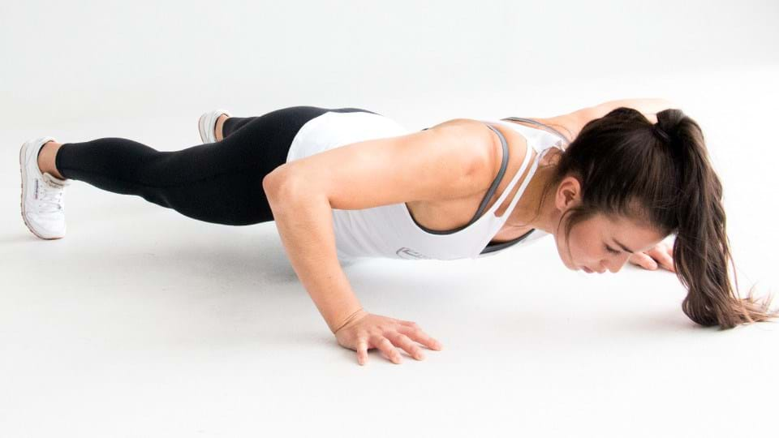

Push Ups
Everyone knows what push ups are, they are a great workout for the chest region. if you find the pushups to easy the can be made more difficult by doing incline pushups or add weight to them. 8 reps 3 sets

Arm workouts are the cornerstone of all workouts, Many non arm workouts indirectly work the arm muscles, like the bench press. Arms are a section of the body where it is easy to see results and that is why we love them.
Everyone knows what push ups are, they are a great workout for the chest region. if you find the pushups to easy the can be made more difficult by doing incline pushups or add weight to them. 8 reps 3 sets
Crunches are easy but work alot. If you want a six pack, crunches are the way to go. To do them Lie on the ground, knees bent with feet flat on the ground and lift head and shoulders while keeping back flat on the ground. 15 reps 3 sets
Dead bugs are great for toning the abs, to do them lie on the ground, lif legs and arms straight up like the video shows and strech opposite arms and legs out.